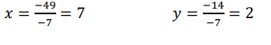
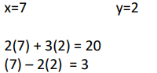

Unidad Educativa Paulo Sexto
Ejemplo
Presentación de Ejercicio
El método de Cramer se aplica para resolver sistemas de ecuaciones lineales que cumplan las
siguientes condiciones:
- El número de ecuaciones es igual al número de incógnitas. El determinante de la
- El matriz de los coeficientes es distinto de cero
- Dado el siguiente sistema de ecuación de 2x2:


Ejemplo
Dado el sistema de ecuacion 2x2:

Aplicar metodo de Cramer:
 |
Ecuación 1 Ecuación 2 |
Matriz 2x2 dos filas y dos columnas |
Pasos a seguir:
| Paso1: Se prepara la matriz de los coeficientes y se halla el determinate. |
|
| Paso 2: Se perara la matriz de la incognita “x” y se halla el determinante. |
|
| Paso 3: Se perara la matriz de la incognita “y” y se halla el determinante. |
 |
| Paso 4: Hallar el valor de las incognitas. |
 |
| Soluciones del sistema y verificar. |  |
Ejemplo 2
Dado el sistema de ecuacion 2x2:

Aplicar metodo de Cramer:
| 5x-2y=-2 | Ecuación 1 | matriz 2x2 |
| -3x+7y=-22 | Ecuación 2 | dos filas y dos columnas |
Pasos para la solución:
| Paso1: Se prepara la matriz de los coeficientes y se halla el determinate |
|
| Paso 2: Se perara la matriz de la incognita “x” y se halla el determinante |
|
|
Paso 3: Se perara la matriz de la incognita “y” y se halla el determinante. |
|
| Paso 4: Hallar el valor de las incognitas |
|
| Soluciones del sistema y verificar. |  |
Obra publicada con Licencia Creative Commons Reconocimiento Compartir igual 4.0